In this post, we’ll be looking at how to deploy a Prefect flow locally.
What does deployment mean?
So far, we’ve learned how to create and run a workflow on our local machine. The Prefect API has been helpful in tracking the workflow’s status through the user interface.
However, what if we need to run the workflow on a different machine or schedule it to run automatically? This is where deployment comes into play.
Deployment in Prefect
To deploy a Prefect workflow, we need to package the workflow code, settings, and infrastructure configuration. This packaging process enables us to manage the workflow using the Prefect API and execute it remotely on a Prefect agent.
I understand this might sound technical, so let’s simplify it further.
- Deployment can be thought of as shipping a package that includes the workflow code, settings, and infrastructure configuration required by Prefect to run the workflow.
- All the necessary files are packed into a single box and labeled with a yaml file e.g.
deployment.yaml. This file contains information about the workflow, its location, and additional metadata. - Using the deployment.yaml file, we can ship the package to the Prefect API, which creates a deployment object and stores it in the Prefect database. The deployment is now ready to be executed.
- However, simply deploying the workflow doesn’t start its execution.
- In Prefect, we have the concept of
work-poolsandagents/workers. When a deployed workflow runs, it creates aflow runwhich is similar to what we did previously when running a Prefect flow. - However, during deployment, the flow run is submitted to a specific work-pool for scheduling. Think of the work-pool as a staging area where the flow run waits to be picked up by an agent/worker. (Imagine package lying in the warehouse waiting for the courier to be picked).
- An agent or worker (courier), operating within the execution environment, polls the work-pool for new runs to execute.
- Once an agent/worker picks up a flow run, it proceeds to execute it and reports the status back to the Prefect API.
It might seem like a lot of steps, but it’s quite simple once you get the hang of it. We’ll be going through each step in detail in the next section.
Deployment in Action
To demonstrate deployment, we’ll be using a simple prefect flow that has a flow with one task. The task simply prints a message to the console. You can find the code for the flow below.
"prefect_demo.py
The flow is simple and will help us focus more on the deployment process rather than understanding what the flow does. Let’s get started.
Step 1: Start a Prefect server
Before we can deploy our flow, we need to start a Prefect server. We’ll be using the Prefect CLI command to start the server. Run the following command in your terminal.
Step 2: Create a yaml file for the deployment
We’ll use the prefect deployment build command to create a deployment definition yaml file. Run the Prefect CLI command from the folder containing your flow script and any dependencies of the script.
Path to the flow is specified in the format path-to-script:flow-function-name — The path and filename of the flow script file, a colon, then the name of the entrypoint flow function.
For our example, the command will be:
Let’s break down the command:
-nspecifies the name of the deployment. We’ve named our deploymentflow_test.-pspecifies the name of the work-pool. Prefect provides a default work-pool nameddefault-agent-pool.-qspecifies the name of the work queue. We’ve named our queuetest.prefect_demo.py:flow_hellospecifies the path to the flow script, a colon, then the name of the flow function.
When you run this command, Prefect:
- Creates a flow_hello-deployment.yaml file for your deployment based on your flow code and options. Usually the format is
<flow_name>-deployment.yaml. You can specify a different name using the--outputoption. - Uploads your flow files to the configured storage location (local by default). (We’ll cover storage in a later post).
- Submit your deployment to the work queue test. The work queue test will be created if it doesn’t exist.
You can find the yaml file in the same folder as your flow script.
Work Queues
Imagine work-pool has a big highway and work-queues are lanes on the highway. Each work-queue is a separate lane on the highway. When a flow run is submitted to a work-pool, it is placed in a work-queue.
As different lanes in a highway have different priorities, and purpose so do work-queues. For example, you might have a work-queue for high priority flows and another for low priority flows. You can seperate your test and production flows by using different work-queues.
Below you’ll find a brief overview of work-queues and I highly recommend you read the official documentation
- Work pools have a
defaultqueue where all work is sent by default, but additional queues can be added for finer control over work delivery. - Work queues have priorities indicated by unique positive integers, with lower numbers having higher priority. New queues can be added without affecting the priority of existing queues.
- Work queues can also have their own concurrency limits, allowing for precise control over the execution of work. However, all queues are subject to the global work pool concurrency limit.
Step 3: Create a deployment on Prefect API
Now that we have the deployment.yaml file, we can create a deployment on the Prefect API. To do this, we’ll use the prefect deployment apply Prefect CLI command.
For our example, the command will be:
Once the deployment is created, you’ll see it in the CLI and the Prefect UI. Run the prefect deployment ls command to see a list of all deployments.
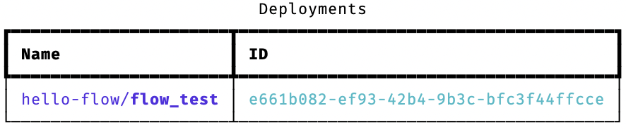
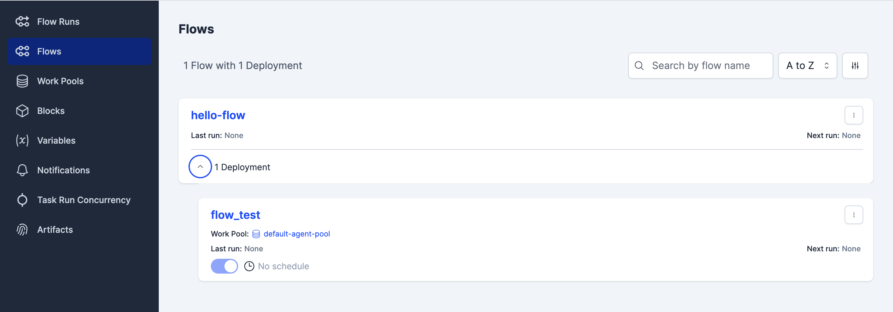
To view the work-pool and work-queue in the Prefect UI, navigate to the Work Pools section and click on the default-agent-pool work-pool. Click on the Work Queues tab to view the test work-queue. You’ll also notice a default work queue. This is the default work queue that Prefect creates when you create any work-pool.
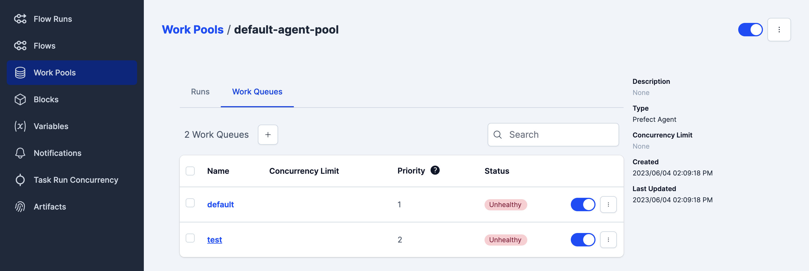
Step 4: Start an agent
Agent processes are lightweight polling services that regularly check a work-pool for scheduled work and execute the corresponding flow runs.
By default, agents poll for work every 15 seconds. You can adjust this interval by configuring the PREFECT_AGENT_QUERY_INTERVAL setting in the profile settings.
You can have multiple agent processes running for a single work pool. Each agent process sends a unique ID to the server, which helps distinguish them from one another and informs users about the number of active agents.
We’ll use the prefect agent start command to start an agent.
For our example, the command will be:
Step 5: Execute the deployment
Now that we have an agent running, we can execute the deployment. To do this, we’ll use the prefect deployment run command.
If you don’t know the name of the deployment, you can use the prefect deployment ls command to get a list of all deployments.
For our example, the command will be:
After running the command, you’ll see the flow run in the Prefect UI. Navigate to the Flow Runs section to view the flow run. Click on the flow run to view the logs.
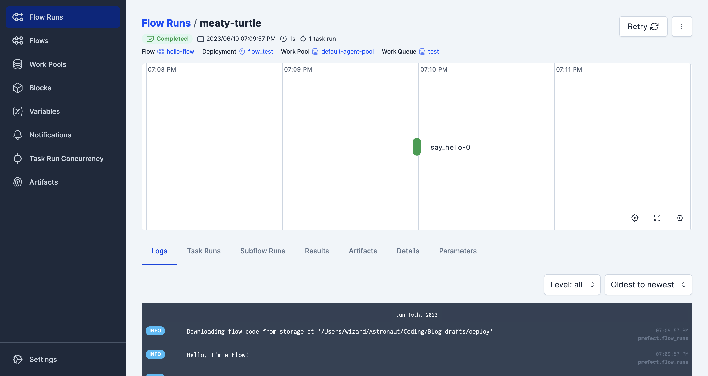
You can also run the flow from the Prefect UI from the Flow section.
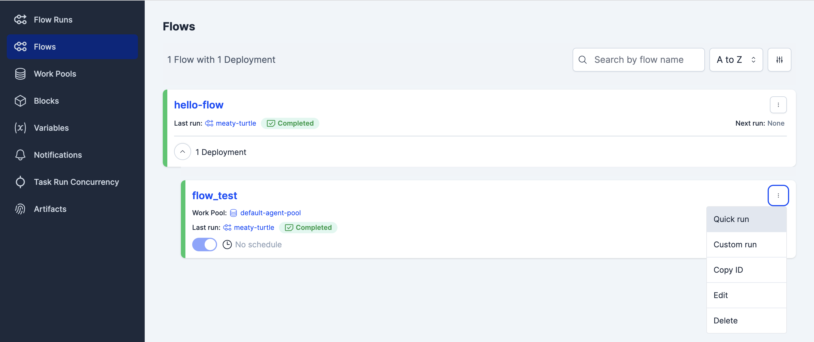
Congratulations! You’ve successfully deployed and executed your first Prefect flow. Yet there’s so much more to cover like schedules, storage, agents, workers, and more.
Congratulations! 🎉 You’ve successfully deployed and executed your first Prefect flow. Yet there’s so much more to cover like 📅 schedules, 📦 storage, 💪 agents, workers, and more.
deployment.yaml file
The YAML file for a deployment contains extra settings required to create the deployment on the server.
A single flow can have multiple deployments created for it, each with different schedules, tags, and other configurations.
To achieve this, you can have multiple deployment YAML files referencing the same flow definition, each specifying distinct settings. The only rule is that each deployment must have a unique name.
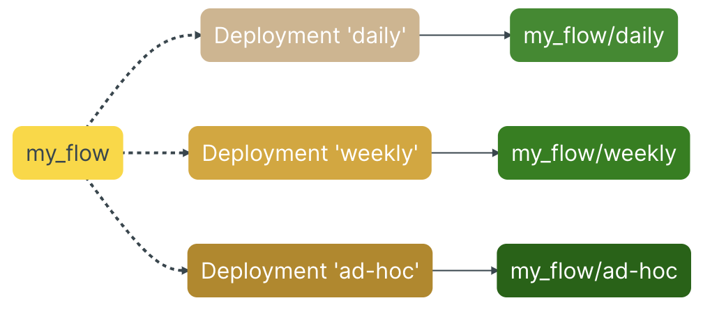
Each deployment is linked to a specific flow, but a flow can be referenced by multiple deployments.
Deployments are uniquely identified based on the combination of the flow name and deployment name.
This allows you to execute a single flow with various parameters, on multiple schedules, and in different environments. It also enables you to run different versions of the same flow for testing or production purposes.
Schedules
Schedules allow you to instruct the Prefect API to automatically generate new flow runs for you at regular intervals.
You can attach a schedule to any flow deployment. The Prefect Scheduler service regularly checks each deployment and generates new flow runs based on the schedule defined for that deployment.
There are four recommended ways to create a schedule for a deployment:
- Use the Prefect UI
- Use the cron, interval, or rrule flags with the CLI deployment build command
- Use the schedule parameter with a Python deployment file
- Manually edit the deployment YAML file’s schedule section
Prefect offers different types of schedules that cater to various needs and provide a high level of customization:
- Cron: This type is well-suited for users who have prior experience with cron and want to leverage its functionality.
- Interval: Ideal for deployments that require a consistent cadence of execution, irrespective of specific timestamps.
- RRule: Designed for deployments that rely on calendar-based logic, allowing for simple recurring schedules, irregular intervals, exclusions, or adjustments based on specific days of the month.
These schedule types offer flexibility and can accommodate a wide range of scheduling requirements.
We’ll go through an example of scheduling a flow run in the section below.
Agents and Workers
Work-pools serve as a way to organize work that agents or workers pick up for execution. The coordination between deployments and agents happens through a shared work-pool name.
In case you want to create a new work pool, you would have to choose the type of the work pool. Type defines the type of infrastructure that can execute runs from this work pool.
That’s where which polling service (Agent / Worker) is decided. View the table below to understand the difference between the two.
| Work-Pool Type | Agent/Worker | Description |
|---|---|---|
| Amazon Elastic Container Service | Worker | Executes flow runs as ECS tasks |
| Azure Container Service | Worker | Executes flow runs in ACI containers |
| Google Cloud Run | Worker | Executes flow runs as Google Cloud Run jobs |
| Docker | Worker | Executes flow runs within Docker containers |
| Kubernetes | Worker | Executes flow runs as Kubernetes jobs |
| Process | Worker | Executes flow runs in subprocesses |
| Prefect Agent | Agent | Executes flow runs in subprocesses |
We have seen an example of an agent in the previous section. Let’s look at an example of a worker.
Worker
Workers are a beta feature and are subject to change in future releases.
Workers are similar to Agents in that they are long-running processes that poll for work i.e., fetch scheduled runs from a work pool and carry out their execution.
However, workers provide the advantage of more control over infrastructure configuration and the capability to route work to specific types of execution environments.
Each worker is assigned a type that corresponds to the specific execution environment where it will submit flow runs. Workers can only join work pools that match their designated type. Consequently, when deployments are associated with a work pool, you can determine the execution environment in which scheduled flow runs for that deployment will be executed.
Above table shows the different types of workers available. Prefect also provides a way to create your own worker type.
Scheduled Flow Run Example with Worker
Step 1: Create a new work-pool.
For our example, the command will be:
-tor--typeflag is used to specify the type of work-pool. In our case, we are using theprocesstype.
On CLI you can use the command prefect work-pool ls to list all the work-pools.
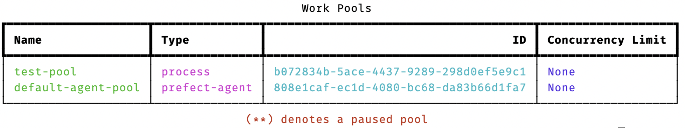
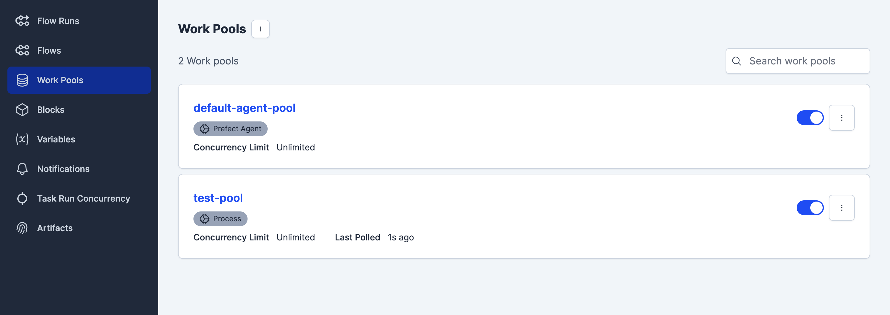
Step 2: Create a new yaml file.
prefect deployment build -n demo_schedule -p test-pool -q demo --cron "0 0 * * *" --output demo_schedule.yaml prefect_demo.py:flow_hello--cronflag is used to specify the cron schedule.
This create flow runs for this deployment every day at midnight.
Step 3: Apply the deployment.
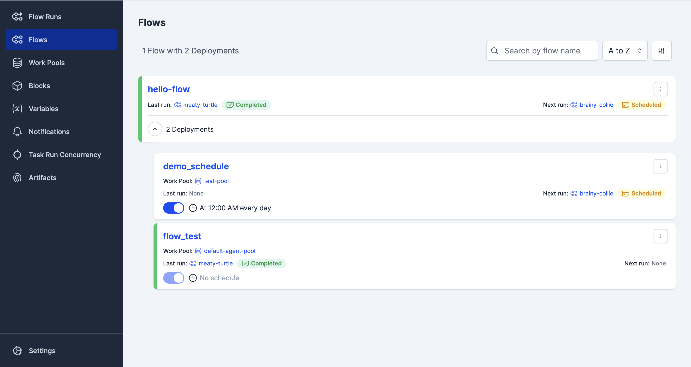
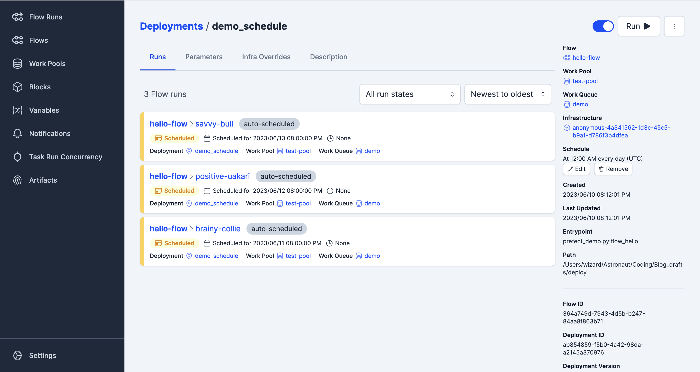
Step 4: Start the worker.
Step 5: Execute the deployment.
Either run the deployment from the Prefect UI or use the CLI command.
One observation you might have made is that we are using the same flow for both the deployments but with different deployments. This is because we want to run the first flow manually through CLI or UI and second on a schedule.
First can be used to test the flow and second can be used to run the flow on a schedule. It completely depends on your use case.
I hope this provides a comprehensive overview of Prefect deployment and steps to deploy a flow. Hush… there’s an abundance yet to explore.
Storage
Prefect follows a hybrid model where your flow code stays within your storage and execution infrastructure and never lives on the Prefect server or database. What does that mean?
It means that there’s always a boundary between your code, your private infrastructure, and the Prefect backend. You can use your existing storage infrastructure to store your flow code. Prefect supports a wide range of storage options like GitHub, local storage, Bitbucket, Amazon S3, Google Cloud Storage, Azure Storage, and more.
Till now we have been using local storage to store our flow code and run the Prefect Server. However, you might choose to store the flow code in a GitHub repository and run the Prefect Server on your local machine. Prefect supports this as well.
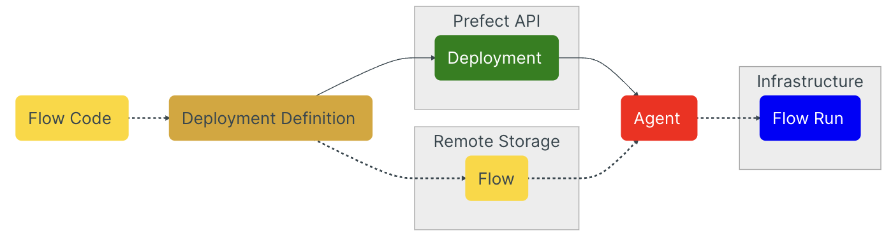
While creating a deployment, you can specify the storage location of your flow code. This let’s Prefect Agent/Worker know where to look for the flow code.
One cool thing about it is if you make changes to your flow code, you don’t have to create a new deployment. Prefect Agent/Worker will automatically pick up the changes and execute the flow with the new code.
However, changes to the infrastructure code will require a new deployment. Such as entrypoint. This part of changing the infrastructure code is experimental for me, I have to try it out more to better understand it.
This post has been a long one. Hence, I have not covered storage in detail. You can refer to the official Prefect documentation on this topic for more details. Hopefully, in the next post I will cover the remaining topics.
Wait, there is ONE more thing!
Prefect Projects
Projects are a beta feature and are subject to change in future releases.
Prefect Projects is a new feature that describe how to prepare one or more flow deployments. You can create a project using the Prefect CLI command prefect project init.
I would encourage you to follow along in a new directory so as to seperate what we did so far from the project.
# Create a new directory
mkdir project
# Change directory
cd project
# Create a new Prefect project
prefect project initOnce you run the command, three files and a directory will be created - deployment.yaml, prefect.yaml, .prefectignore, and .prefect/ directory.
deployment.yaml: a YAML file describing base settings for deployments produced from this projectprefect.yaml: a YAML file describing procedural steps for preparing a deployment from this project, as well as instructions for preparing the execution environment for a deployment run.prefect/: a hidden directory where Prefect will store workflow metadata.prefectignore: a file that specifies files and directories to ignore when preparing a deployment
Below we’ll go through an example of how to use Prefect Projects to create a deployment.

Step 1: Create a new project.
Step 2: Create a flow.
We’ll be utilizing the same flow we created earlier but with some changes. The flow will take a name as an argument, which are called parameters to a flow in Prefect.
prefect_demo.py
import argparse
from prefect import flow, task
@task(name="say_hello", log_prints=True)
def say_hello():
print("Hello, I'm a Task!")
@flow(name="hello-flow", log_prints=True)
def flow_hello(name: str):
print(f"Hello {name}, I'm a Flow!")
print("I'm about to call a Task...")
say_hello()
if __name__ == "__main__":
parser = argparse.ArgumentParser()
parser.add_argument("--name", help="Your name", default="World")
args = parser.parse_args()
flow_hello(args.name)Step 3: Start the Prefect Server.
Step 4: Start the Prefect Worker.
Step 5: Configure the deployment.yaml file.
Previously, we created seperated files for creating a deployment and executing it.
However, with Prefect Projects, we can do both in a single file. The deployment.yaml file is used to configure the deployment. Let’s look at the contents of the file.
deployment.yaml
deployments:
- # base metadata
name: manual-deployment
tags: ["test"]
description: "Trigger deployment using `run` CLI command or Prefect UI"
# flow-specific fields
entrypoint: prefect_demo.py:flow_hello
parameters:
name: "Sagar"
# infra-specific fields
work_pool:
name: test-pool
work_queue_name: demo
- # base metadata
name: scheduled-deployment
tags: ["dev"]
description: "Trigger deployment using a Schedule"
schedule:
cron: 0 0 * * *
timezone: America/Chicago
# flow-specific fields
entrypoint: prefect_demo.py:flow_hello
parameters:
name: "World"
# infra-specific fields
work_pool:
name: test-pool
work_queue_name: demoStep 6: Deploy your flow.
This file has two deployment declarations, each referencing a same flow in the project but with different parameters and schedule. Each deployment declaration has a unique name field and can be deployed individually by using the --name flag when deploying.
You also have the freedom to deploy different flows in the same yaml file. Example, we already have one flow file called prefect_demo.py. We can create another flow file called prefect_demo_2.py and reference it in the deployment.yaml file. Give the appropriate entrypoint and parameters and you are good to go.
This method of declaring multiple deployments allows the configuration for all deployments within a project to be version controlled and deployed with a single command.
You can deploy a single deployment by using the --name flag.
You can also deploy multiple deployments by providing multiple --name flags.
Or, you can deploy all the deployments by using the --all flag.
For our example, we’ll deploy both the deployments.
You might have noticed that we are using the prefect deploy command instead of prefect deployment command. This is because while using Prefect Projects, prefect deploy command under the hood performs multiple steps like build, push, pull, and applies the deployment. You can read more about it here.
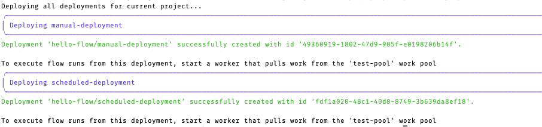
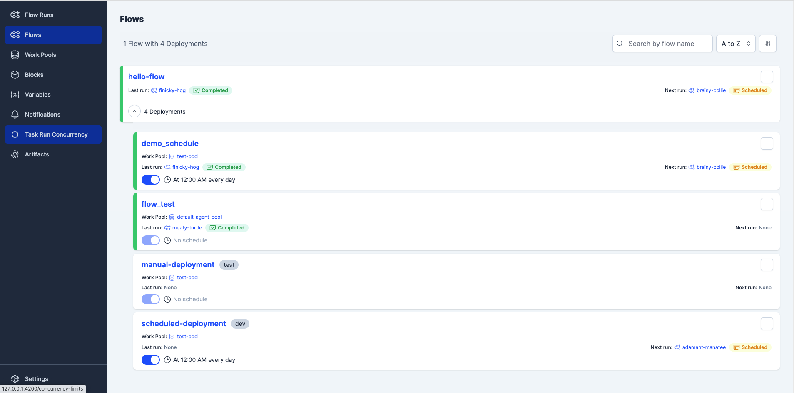
Step 7: Execute the deployments.
You can execute a deployment either through the Prefect UI or using the CLI command.
# Using the default parameters
prefect deployment run hello-flow/manual-deployment
# Using the custom parameters
prefect deployment run hello-flow/manual-deployment --param name="Prefect"Output of the CLI command with default parameters.
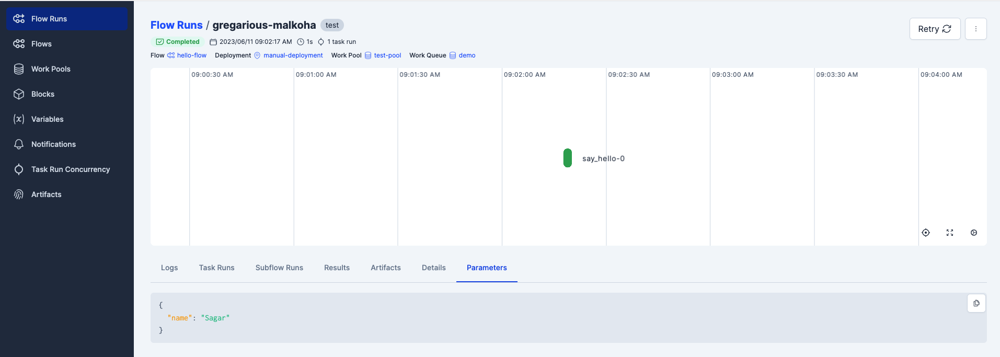
Output of the CLI command with custom parameters.
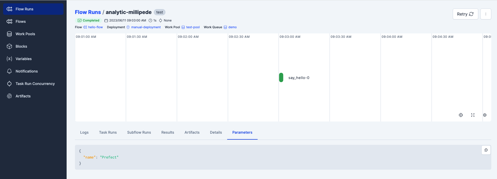
Congratulations! 🎉 You have successfully created your first Prefect Project.
Prefect Project have a lot more to offer.
I encourage you to read about Templating Options for deployment.yaml file that lets you refer dynamic value to the file. Also, read more about prefect.yaml file here.
References
{kind=link}
Conclusion
In this post, we covered the basics of Prefect deployment and how to deploy a flow. We also covered Prefect Projects and how to use it to create a deployment. In the next post, we’ll cover storgae and deployment on Prefect Cloud.
Thank you for reading and I hope you found this notebook helpful. 👏 Upvote if you liked it, 💬 comment if you loved it. Hope to see you guys in the next one. ✌️ Peace!